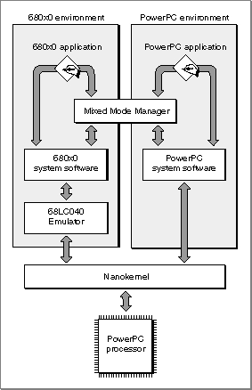

Overview of the PowerPC System Software
The system software for PowerPC processor-based Macintosh computers is System 7.1, with suitable changes made to support the mixed environment that allows both 680x0 software and PowerPC software to execute on a computer. The mixed environment provides virtually complete compatibility for existing 680x0 software, as well as vastly increased performance for applications and other software that are built to use the native instruction set of the PowerPC microprocessor.Because the system software for PowerPC processor-based Macintosh computers is derived from System 7.1 for 680x0-based Macintosh computers, your application--whether 680x0 or PowerPC--must conform to the basic requirements imposed by system software versions 7.0 and later. In particular, your application (or other software) must be
If your 680x0 software conforms to these specific requirements and to the general requirements for Macintosh software documented throughout Inside Macintosh, it is highly probable that it will execute without problems on PowerPC processor-based Macintosh computers. This is because the system software for PowerPC processor-based Macintosh computers includes a very efficient 68LC040 Emulator that emulates 680x0 instructions with PowerPC instructions. In addition, the system software includes the Mixed Mode Manager, which is responsible for handling any necessary mode switches between the native PowerPC environment and the 680x0 environment.
- 32-bit clean
- compatible with the operations of the Virtual Memory Manager
- able to operate smoothly in the cooperative multitasking environment maintained by the Process Manager
Figure 1-1 shows a general overview of the system software for PowerPC processor-
based Macintosh computers. A small kernel, called the nanokernel, communicates directly with the PowerPC processor and provides very low-level services (such as interrupt handling and memory management).Figure 1-1 The system software for PowerPC processor-based Macintosh computers

Even applications written entirely in 680x0 code might cause mode switches while they are executing, because some portions of the Macintosh Operating System have been rewritten in PowerPC code for increased performance. For example, the Memory Manager has been rewritten in C and recompiled into PowerPC code. In general, however, mode switches occur completely transparently to 680x0 software. Only native PowerPC software needs to worry about mode switches. See "Mixed Mode" beginning on page 1-13 for details.As you would expect, the emulation environment provided by the 68LC040 Emulator uses the standard 680x0 run-time model. The organization of an application partition and the run-time behavior of emulated software are identical to what is provided on 680x0-based Macintosh computers. However, the execution environment for native PowerPC software is significantly different from the standard 680x0 run-time environ-
ment. The PowerPC environment provides a much simpler and easier-to-use run-time model based on fragments. A fragment is any block of executable PowerPC code and its associated data. Fragments are created by your development system's linker.Fragments use a method of addressing the data they contain that is different and more general than the A5-relative method that 680x0 applications use to address their global data. One important consequence is that any PowerPC software packaged as a fragment has easy access to global data. In the 680x0-based system software, it was sometimes difficult to use global data within types of software other than applications.
- Note
- The term fragment is not intended to suggest that the block of code and data is in any way either small, detached, or incomplete. Fragments can be of virtually any size, and they are complete, executable entities. The term fragment was chosen to avoid confusion with the terms already used in Inside Macintosh to describe executable code (such as component and module).

In addition, it was often complicated for a routine installed by some code to gain
access to the code's global variables. For example, you cannot--in the current 680x0 environment--write a VBL task that uses your application's global variables without somehow passing your application's A5 value to the VBL task. (A VBL task is a task that executes during a vertical blanking interrupt.) In the PowerPC environment, any routine contained in an application has automatic access to the application's global variables. You do not need to devise special ways to pass the address of your application's A5 world to the installed routine. More generally, any routine executing in the PowerPC environment has access to the global data of the fragment it's contained in.The new run-time model used for native PowerPC software incorporates other important simplifications as well. In native applications, there is no segmentation of the executable code. The existing compilers that produce PowerPC code ignore any segmentation directives you include in your source code. In addition, any calls you make to the Segment Manager's
UnloadSegprocedure are simply ignored by the PowerPC system software. The task of keeping required code in memory is handled completely by the Virtual Memory Manager or the Process Manager, not by your application.The remaining sections in this chapter describe in greater detail the mixed environment of PowerPC processor-based Macintosh computers and the new native run-time environment. If you're interested mainly in rebuilding your application as native PowerPC code, you can skip to the section "Mixed Mode" beginning on page 1-13, which describes the ways in which you might need to use the Mixed Mode Manager to make your native application compatible with the mixed environment.